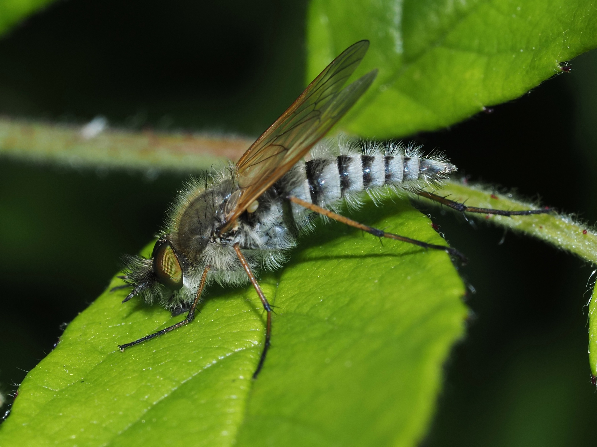
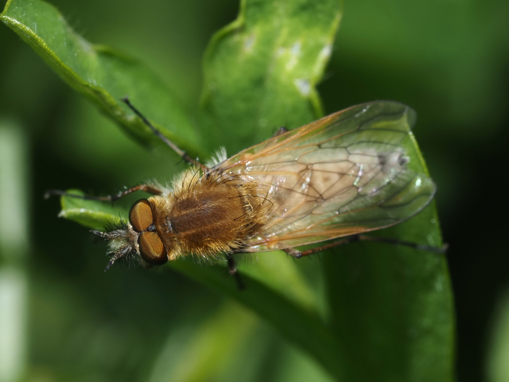
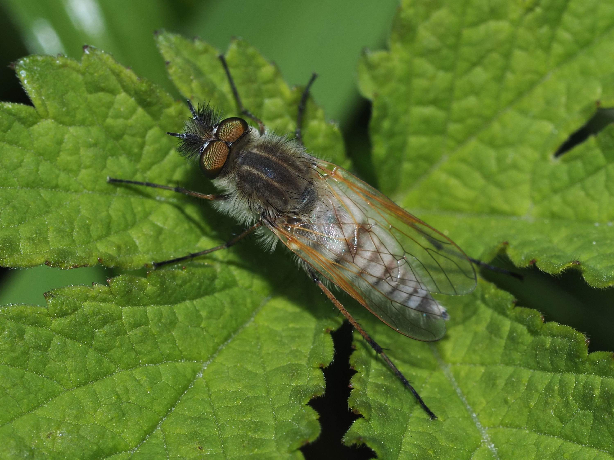
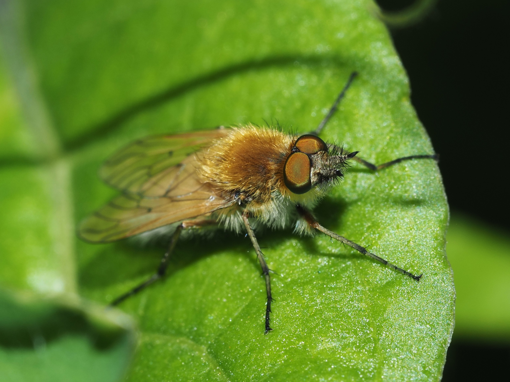
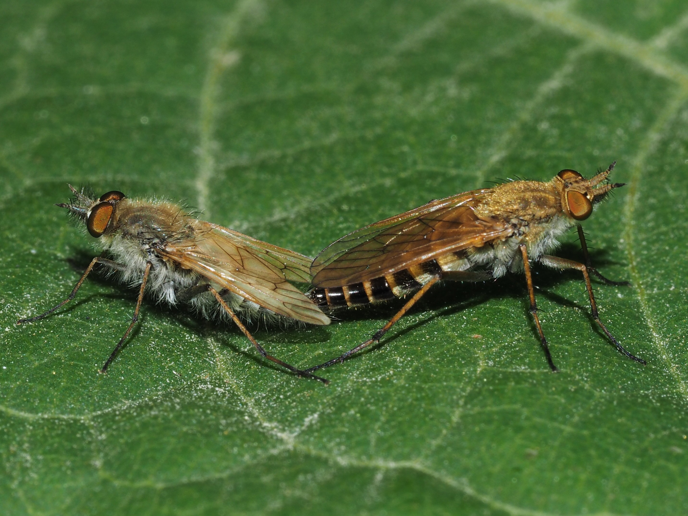
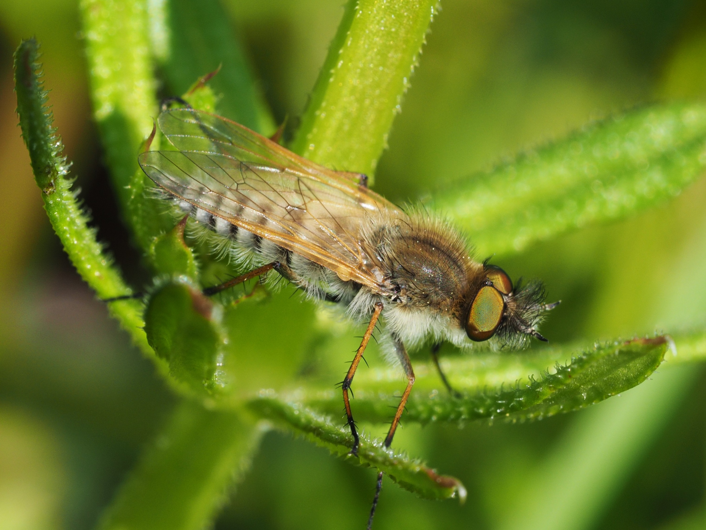
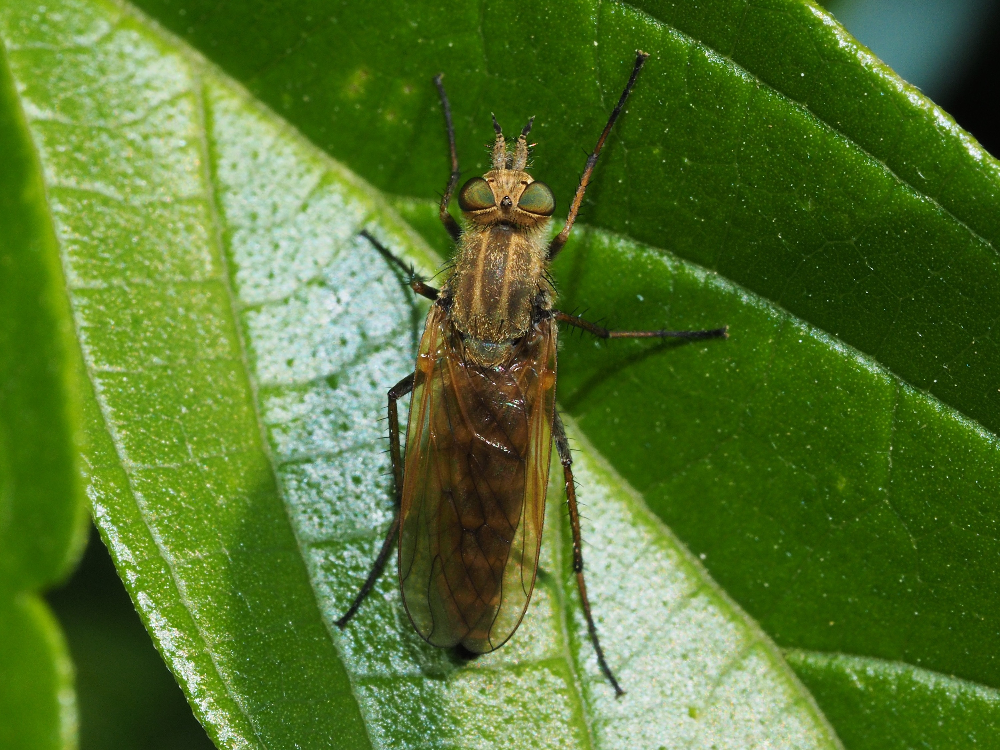
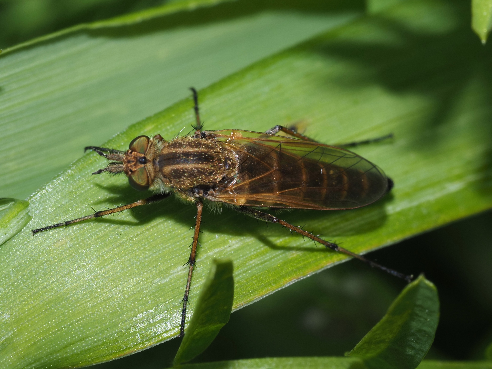
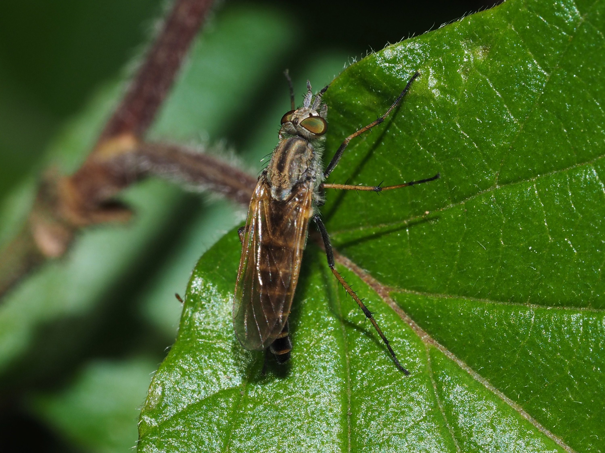
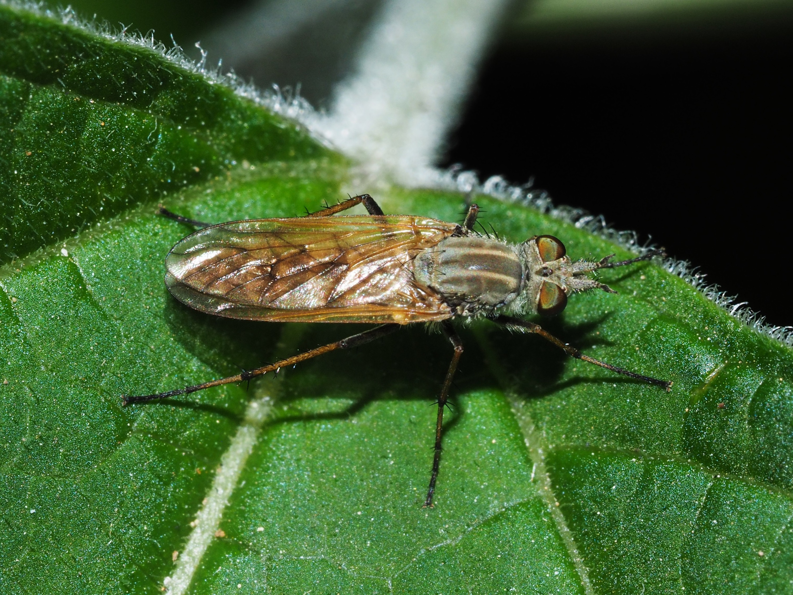

ﾂﾙｷﾞｱﾌﾞの一種 (ﾂﾘｱﾌﾞ科）0550

ﾂﾙｷﾞｱﾌﾞの一種_新座市埼玉県_20220501

ﾂﾙｷﾞｱﾌﾞの一種_三芳町埼玉県_20240426

ﾂﾙｷﾞｱﾌﾞの一種_新座市埼玉県_20220417

ﾂﾙｷﾞｱﾌﾞの一種_新座市埼玉県_20220501

ﾂﾙｷﾞｱﾌﾞの一種_清瀬市_20180521

ﾂﾙｷﾞｱﾌﾞの一種_柳瀬川_20160415
戻る
ﾂﾙｷﾞｱﾌﾞの一種 (ﾂﾘｱﾌﾞ科）0550a

ﾂﾙｷﾞｱﾌﾞの一種_清瀬市_20170521

ﾂﾙｷﾞｱﾌﾞの一種_清瀬市東京都_20220417

ﾂﾙｷﾞｱﾌﾞの一種_嵐山町_20180511

ﾂﾙｷﾞｱﾌﾞの一種三芳町_20180502
戻る